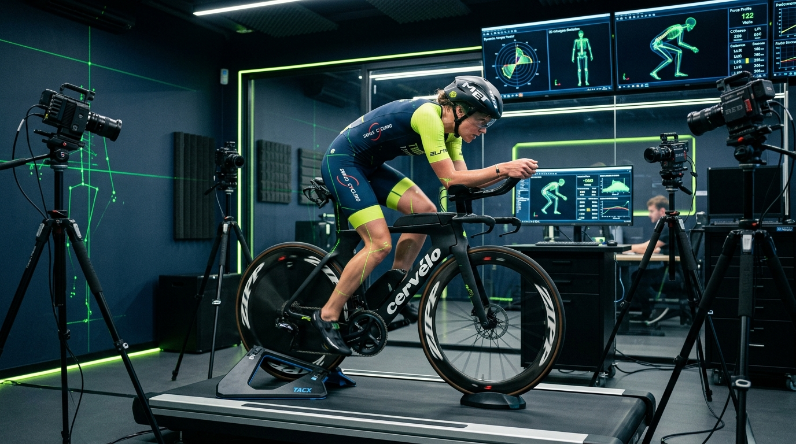
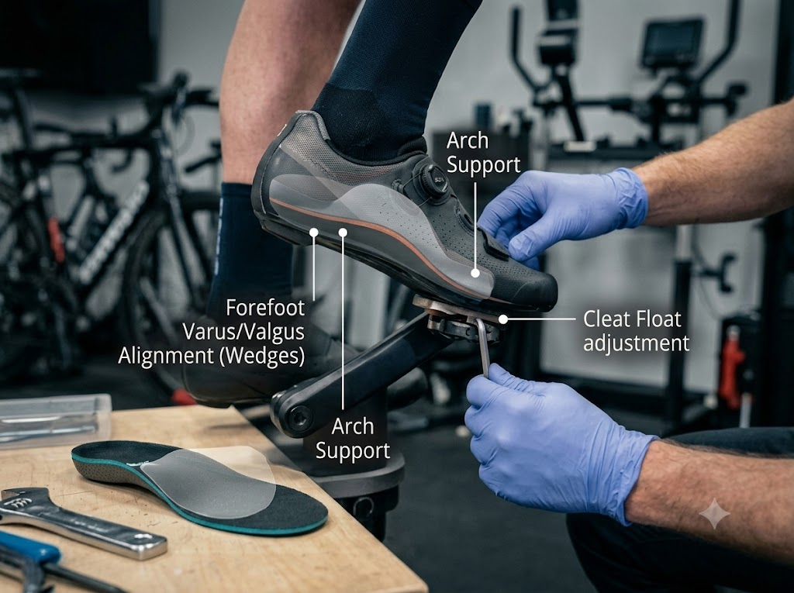
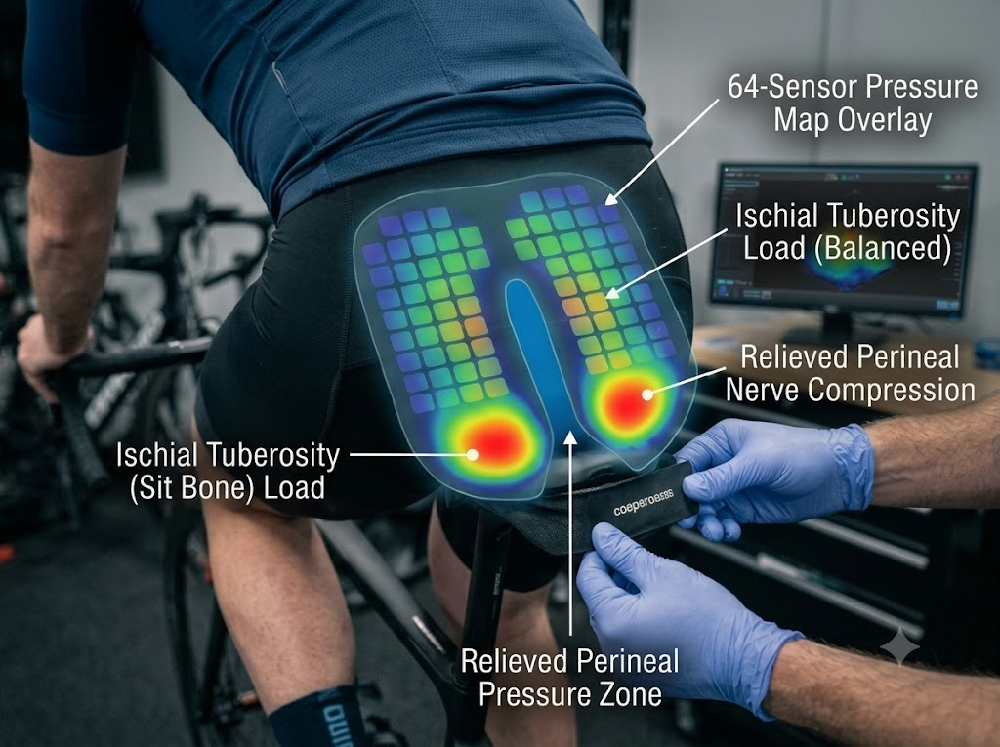
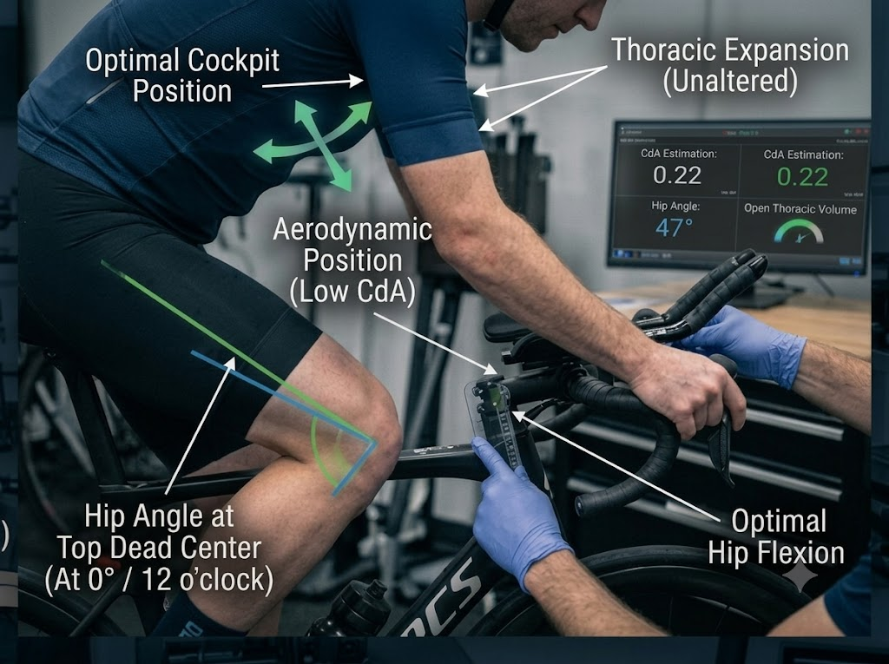

The Biomechanics
of Human Velocity.
An engineering-grade approach to cycling performance. We analyze the complex musculoskeletal interface between the rider's pelvis, feet, and cockpit to minimize physiological resistance and aerodynamic drag.

AIRSPEED: 48.2 km/h
DRAG (CdA): 0.201 m²
The Three Pillars of Cycling Kinetics
Every millimeter of cockpit alteration resonates across your entire kinetic chain. We address each mechanical variable in strict sequence.

Foot-Pedal Foundation
If the foot is unstable, the knee collapses and the pelvis tilts. We establish forefoot varus/valgus alignment, arch support, and cleat float before any saddle adjustments.
- • Sagittal plane laser tracking
- • Subtalar neutral calibration
- • Q-factor stance width optimization

Pelvic Center of Mass
The pelvis acts as the keystone of cycling posture. We use 64-sensor dynamic pressure mapping to balance ischial tuberosity load and relieve perineal nerve compression.
- • Dynamic pelvic rock quantification
- • Pubic ramus pressure dispersion
- • 35+ test saddle ergonomic library

Aerodynamic Cockpit
With a stable foundation and pelvis, we drop frontal area (CdA) without compressing thoracic lung volume or pinching the hip angle at top dead center.
- • Open hip angle preservation (>45°)
- • Narrow drop bar aerodynamic gain
- • Relaxed 15° shock-absorbing elbow angle
Specialized Kinematics Across Disciplines
Each cycling discipline requires distinct biomechanical priorities.
Road & Gran Fondo
Sustained power, climbing leverage, and neck endurance across 4-to-6 hour rides.
Triathlon & TT
Frontal area CdA reduction while preserving hamstring elasticity for the run transition.
Gravel & Bikepacking
Vibration compliance, flared drop leverage, and wrist relief preventing ulnar nerve palsy.
Mountain & Enduro
Standing attack posture, suspension sag compensation, brake lever reach, and arm pump relief.
Why Static Bike Fitting Is Outdated
When a rider is stationary, muscle tension drops and joint angles shift by up to 8 degrees compared to actual pedaling. Static goniometers miss your natural dynamic heel drop, cadence micro-shifts, and fatigue compensations.
Our 3D cameras track 8 active anatomical markers over 300+ continuous pedal revolutions. The system calculates statistical averages under true threshold resistance, guaranteeing an accurate, sustainable fit.

Studio Measurement Instrumentation
Our laboratory bays utilize medical and Olympic-tier telemetry to eliminate speculation.

Vicon & Retül 3D Optics
60 FPS synchronized infrared tracking of 8 anatomical joints under true metabolic workload.

GebioMized Pressure Lab
64-point sensor mat providing dynamic pelvic rotation mapping and soft-tissue relief telemetry.

SpinScan Torque Vectors
Dual-sided 360° pedaling telemetry mapping torque dead-spots and left/right power balance.

Virtual CdA Profiler
Computational frontal drag modeling finding the optimal balance between aerodynamic tuck and power.
Documented Performance Gains
Measurable biomechanical adaptations verified in race results.
Patellar Relief & +18W Threshold
Rider experienced sharp right knee pain. Lab diagnosed 12mm low saddle and uncorrected forefoot varus. Saddle raised to 768mm, 1.5° wedge added. Pain eliminated in 48 hours.
CdA Reduced by 0.024 m²
Replaced traditional aero bars with 15° angled carbon forearms and narrowed pad width by 25mm. Shaved 5 minutes and 18 seconds off 90km bike split.
Total Saddle Numbness Resolution
GebioMized pressure mapping isolated 850 mbar perineal pressure spike. Swapped to short-nose cut-out saddle with 1.5° down tilt. 0 mbar soft tissue compression achieved.
Frequently Asked Questions
Book a Biomechanics Consultation
All appointments include our 30-day adaptation guarantee and follow-up review window.